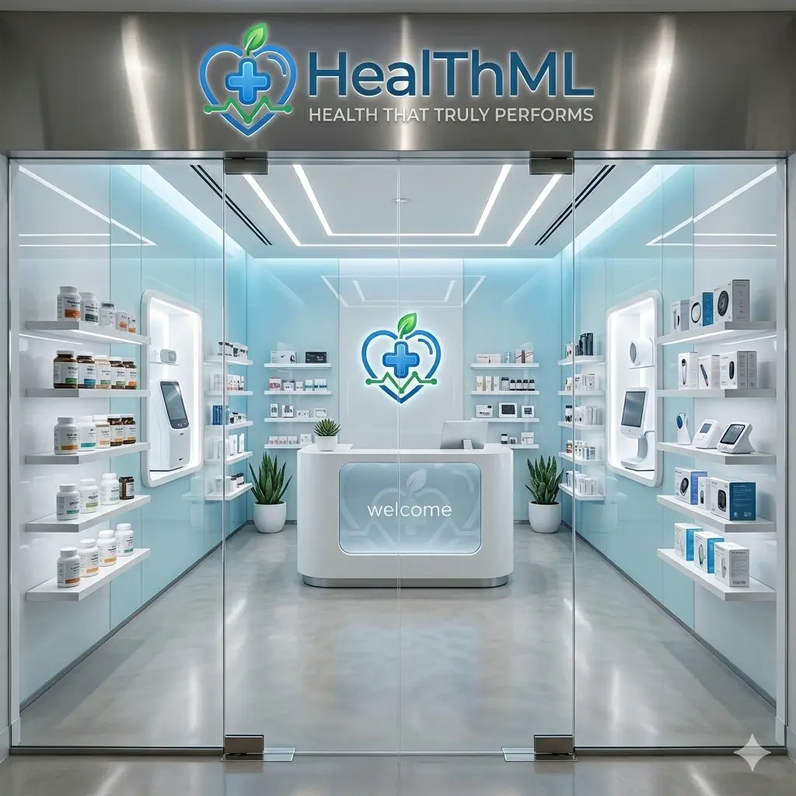
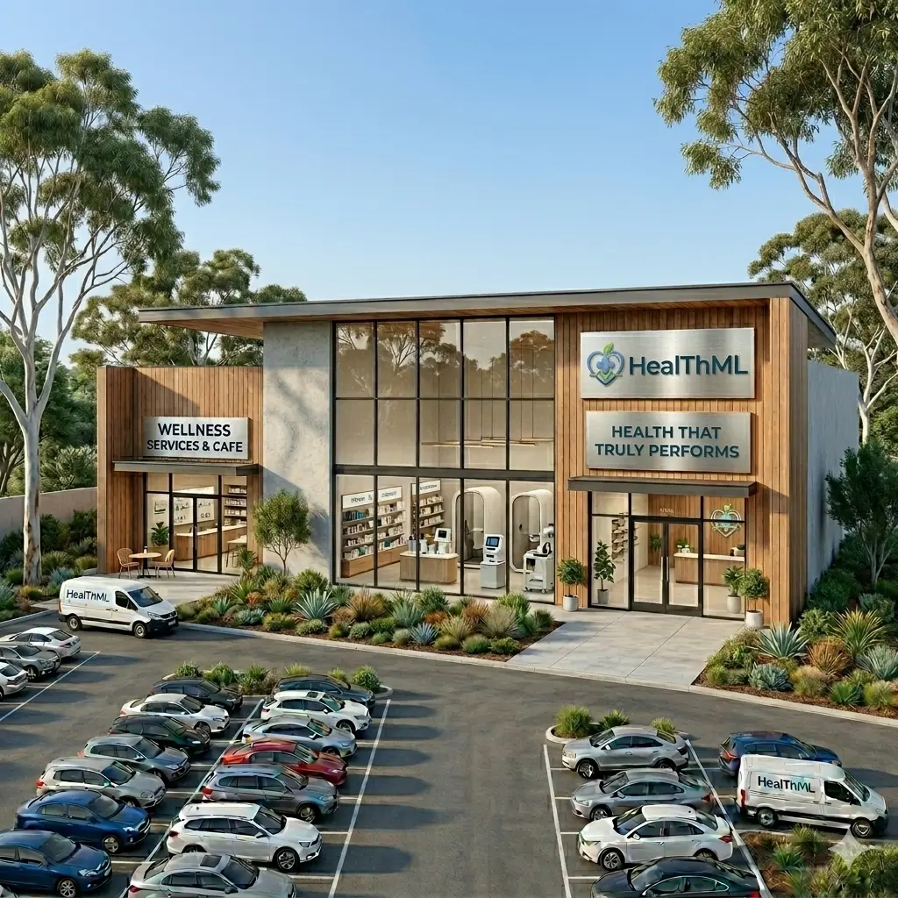

Who Are We?HealThML is a private healthcare provider, founded in 1986 by Henry Teal and Micheal Leiung. Together, Henry and Micheal build the Private Health Partnership out of their garage, which eventually led to them being the Care Support Services group we know them as today. HealThML is built on more than four decades of hands-on clinical and operational experience, covering 7 locations in 3 different states. Since our founding, we have grown from a local service team into a trusted organisation supporting individuals, families, and workplaces with dependable health solutions designed for real life. We focus on combining professional care standards with practical accessibility, so people can get the support they need without confusion, long delays, or unnecessary complexity.What makes us different is our commitment to continuity of care and service quality at every stage. Our clinicians, coordinators, and support teams work together to provide clear communication, respectful treatment, and reliable follow-through from first contact to ongoing support. We invest in staff training, modern systems, and feedback-led improvements so our services stay responsive as patient and community needs evolve. If you want to learn more about our background, values, and long-term mission, visit our About pageAbout page. If you are interested in the type of role we are currently hiring for, you can read the full position overview on our Job Description pageJob Description page. We have jobs open in both our stores and warehouse, and each environment offers different opportunities to contribute. Store-based roles focus on direct patient support, front-of-house coordination, appointment flow, and maintaining a calm, professional experience for every person who walks through our doors. Warehouse and logistics roles keep our service network moving by managing stock accuracy, equipment preparation, and distribution timelines that help clinical teams deliver care without interruption. Across both pathways, we provide structured onboarding, practical mentoring, and clear progression options so team members can build confidence quickly and continue growing over time. If you are exploring where your strengths best fit, the Job Description pageJob Description page outlines responsibilities in detail, and the About pageAbout page explains how each role connects to our broader mission. |
 |
 |
|
|
We are currently expanding our team and looking for people who care deeply about patient outcomes,
collaboration, and high standards of professional conduct. At HealThML, team members contribute to
meaningful healthcare work while developing skills across communication, service delivery, and problem
solving in a supportive environment. Whether you are early in your career or bringing established
experience, we value initiative, empathy, and a commitment to doing the fundamentals well every day.
The role we are advertising is ideal for candidates who want to make a measurable impact and grow with a company that prioritises both people and performance. We encourage you to review the key responsibilities and selection criteria on the Job Description pageJob Description page, then submit your details through our Apply pageApply page. If you would like more context about who we are before applying, our About pageAbout page covers our story, vision, and service philosophy in more detail. Beyond technical capability, we look for people who communicate clearly, take ownership of their work, and treat colleagues and patients with consistent respect. Many of our best improvements come from team members who notice small friction points and suggest practical fixes, so we actively encourage constructive feedback and continuous improvement at every level. If that sounds like the kind of workplace you want to be part of, your next step is simple: review the role details, prepare your application, and apply through our Apply pageApply page. We would love to learn more about your experience and how you could help shape the next stage of HealThML. |
HealThML would like to acknowledge the traditional owners of the land that we work
and serve on.
We give our gratitude to the Indigenous Australian elders past, present, and emerging, who's traditions and
practices have kept this country beautiful for thousands of years.